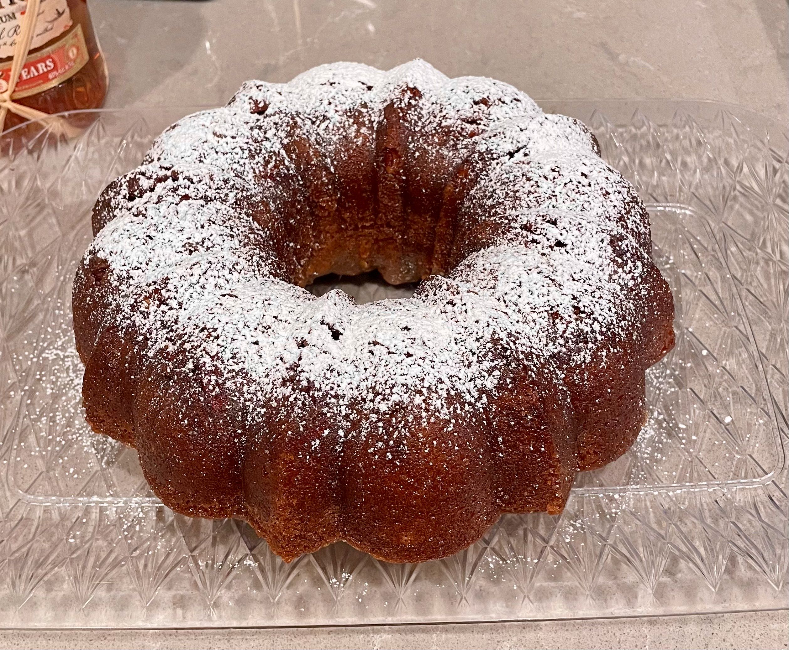

Gluten Free Rum Cake
Home
"This simple gluten free rum cake is a ridiculously moist, not-too-sweet bundt cake with a butter rum glaze that will make any occasion festive—and not just because it has booze."
This recipe is originally from gluten free on a shoestring.

Ingredients
For the Cake
- 1 cup (120 g) chopped raw pecans, (or walnuts)
- ½ teaspoon pure vanilla extract
- 1 ¼ cups (225 g) granulated sugar
- 1 ¾ cups (245 g) all purpose gluten free flour blend
- ¾ teaspoon xanthan gum, (omit if your blend already contains it)
- ¾ cup (72 g) powdered milk, nonfat or whole milk powder is fine
- 3 tablespoons (27 g) cornstarch, (or try arrowroot)
- 1 ½ teaspoons baking powder
- ½ teaspoon baking soda
- 1 teaspoon kosher salt
- ½ cup (112 g) canola oil, (or try another neutral oil, like peanut)
- 3 tablespoons (1 ½ fluid ounces) gluten free rum, (See Recipe Notes)
- 4 (200 g (weighed out of shell)) eggs, at room temperature, beaten
- ½ cup (4 fluid ounces) milk, at room temperature (any kind will do)
For the Glaze
- 6 tablespoons (84 g) unsalted butter, chopped (for dairy free, try Earth Balance buttery sticks)
- 3 tablespoons (1 ½ fluid ounces) water
- ¾ cup (150 g) granulated sugar
- ⅛ teaspoon kosher salt
- 6 tablespoons (3 fluid ounces) gluten free rum, (See Recipe Notes)
- Confectioners’ sugar, for dusting
Instructions
Make the Cake
- Preheat your oven to 325°F (or 300°F if you are using a dark-colored bundt pan). Grease well a standard bundt pan.
- In a small bowl, place the chopped raw pecans, vanilla extract and 1/8 cup (25 g) granulated sugar, and toss to combine.
- Scatter the sugared nuts evenly on the bottom of the prepared bundt pan, and set the pan aside.
- In a large bowl, place the flour, xanthan gum, nonfat dry milk, cornstarch, baking powder, baking soda, salt and remaining 1 1/8 cups (225 g) granulated sugar, and whisk to combine well.
- Create a well in the center of the dry ingredients, and add the canola oil, rum, eggs and milk, beating to combine after each addition. The batter should be thickly pourable.
- Pour the batter evenly on top of the chopped nuts in the bundt pan and shake into an even layer.
- Place the bundt pan in the center of the preheated oven and bake until a toothpick inserted in the center of the cake comes out mostly clean, or with a few moist crumbs attached (about 45 minutes—or 40 minutes for a dark bundt pan). Be careful not to over bake the cake, as the bottom will burn easily.
- Remove the cake from the oven and allow the cake to cool in the pan for 10 minutes.
Make the Glaze
- In a small, heavy-bottom saucepan, place all the glaze ingredients except for the rum.
- Bring to a boil, stirring frequently, over medium heat. The mixture will begin to bubble.
- Remove the pan from the heat, add the rum, and mix to combine. The rum will cause the mixture to bubble up quickly. Just stir until the bubbling subsides, which will happen quickly.
- Return the saucepan to medium heat and bring the mixture to a simmer, stirring occasionally, until the glaze is reduced by nearly 1/4 (about 5 minutes).
- The glaze should bubble gently while it is reducing. If it bubbles too fiercely, reduce the heat.
Glaze the Cake
- Pour the hot glaze evenly over the warm cake, still in the pan, and allow to sit until the cake has absorbed the glaze (about 10 minutes more).
- If the glaze is slow to absorb into the cake, pierce the top of the cake in a few spots with a butter knife.
- Carefully pull the cake away from all the edges of the bundt pan with a butter knife before inverting it onto a serving platter to unmold it. Dust lightly with confectioners’ sugar and serve warm.